R.utils::sourceDirectory(here::here("src", "functions"))Coordinates, axes, and position scales
Overview
The focus of this module will be on plots visualized on a Cartesian Coordinate system. When you are dealing with other types of data, you may wish to plot on a different coordinate systems. When needed, you can check out ggplot2::coord_polar() or libraries like {sf} for plotting maps. Moreover, out-of-the-box plots present axes that are rarely visualized in a way suitable to your plot.
They often, if not always, require some fine tuning. Previous modules are replete with plots containing poorly labelled axes. When plots have poor labels and tick marks, your ability to interpret the plot is compromised. At the time, we overlooked those limitations. We now focus on changing scale limits, breaks, and labels for axes.
To Do
Review corresponding Canvas video(s).
Optional Readings
External Functions
Provided in class:
view_html(): for viewing data frames in html format, from /src/my_functions.R
You can use this in your own work space but I am having a challenge rendering this of the website, so I’ll default to print() on occasion.
Libraries
- {dplyr} 1.1.4: for selecting, filtering, and mutating
- {ggplot2} 3.5.1: for plotting
Load libraries
library(dplyr)
library(ggplot2)Loading Data
To examine some associations, we will use some swimming event times which can be accessed from:
https://raw.githubusercontent.com/slicesofdata/dataviz24/main/data/processed/cleaned-2023-cms-invite.csvTo access the data, either read the file directly from the url using read.csv() and assign the data frame a name like SWIM:
read.csv("https://raw.githubusercontent.com/slicesofdata/dataviz24/main/data/processed/cleaned-2023-cms-invite.csv")
Or download it and save to the /data/processed directory and read from there.
SWIM <- read.csv(here::here("data", "processed", "cleaned-2023-cms-invite.csv"))Coordinates
For any graphical data visualization to be created, it must fall within some defined position scales. The position scale is essential for defining where elements of the visualization are located in space. For two dimensional visualizations that appear in print or in electronic form, those positions are constrained by two axes, conventionally known as x and y. In print, those positions typically take the horizontal and vertical positions, respectively. Those axis names and their orientations are arbitrary but they provide a common language for all people creating visualizations to understand. Together, set of position scales (x and y here) and their relative geometric arrangement creates the coordinate system.
To plot a single bar as narrow as a single pixel (technically a line), some position needs to be determined on the x-axis for the bar location and on the y-axis for its terminal height. That xy location for that specification is very much just a point until the bar (line) extends to some terminal location, typically at the x-axis. When the bar width is greater than a single pixel, then the thickness defines more positions but are needed nonetheless. When there are two or more bars, each likely needs its own position so that they are not stacked on top of each other. Similarly, points for scatter plots also need positions in space to represent their x and y positions.
The Cartesian Coordinate System
The coordinate system described above is that Cartesian coordinate system, within which locations are specified by positions on the x and y axis corresponding to specific values determined by x and y as single values or specified by sets of values belonging to x and y. Because axes themselves are lines and represent continuous position scales, they stretch in real numbers beyond 0 in both directions, resulting in four quadrants of the coordinate system. Thus, x and y axes can contain both positive and negative real numbers. The visualization, however, needs axis limits in order to define the space along x and y for the data to appear. As you are familiar, many plots limit x and y axes to a value of 0 on the low end and some other value on the upper end. Data that exist outside of the define plot axis limits will not be depicted in the plot.
A plot depicting values from x and y variables from the same unit system should be visualized such that the interval between values along two axes is equivalent. For example, if x and y both represent quantities, the number of pixels separating 1 and 3 on the x axis should be equivalent on the y axis. In other words, the same number of data units along the x or y axis should correspond to the same distance on those axes. Violations of this representation occur and present perceptual distortions of the data. In some instances, for example, when the limits of the x and y axes are the same, the plot should take form as a square rather than rectangle with either the x or the y axis longer than the other.
When the variables are on different scales, however, either x or y axis could be stretched or compressed for a different perspective depending on the goal so storytelling. As long as one is not trying to bias their audience in a way to mislead them, a favorable aspect ratio could be one with good aesthetics. A plot with balance is always appealing. Something too wide or too tall may just appear odd. In general, an aspect ratio should be chosen that communicates important aspects of differences in position are noticeable.
When plots (e.ggeom_()s) use statistical transformations (e.gjittering), you should consider carefully the influence of the data position relative to the actual data. Fine tuned these transformations to ensure the the visualize data are most true to the actual data to reduce bias.
Coordinate Functions: coord_*()
There are a variety of coord_() layer functions for . By default, plots already have a coord_cartesian() layer. Also, the x-axis is oriented horizontally and the y-axis is oriented vertically. By tradition, predictor variables assume the x-axis orientation, whereas outcome variables assume the y-axis.
coord_flip()
coord_flip() is used to flip the Cartesian coordinate system such that the x and y axis swap positions. Flipping may facilitate plot perception, for example, when bar length rather than height either makes more sense or supports comparisons. Outcome variables that are natively perceived in terms of length rather than height may also benefit from plotting the outcome variable along the x axis.
SWIM |>
filter(Distance == 100) |>
group_by(Event) |>
summarize(Time = mean(Time)) |>
ggplot(mapping = aes(x = Event, y = Time)) +
geom_col() +
coord_flip()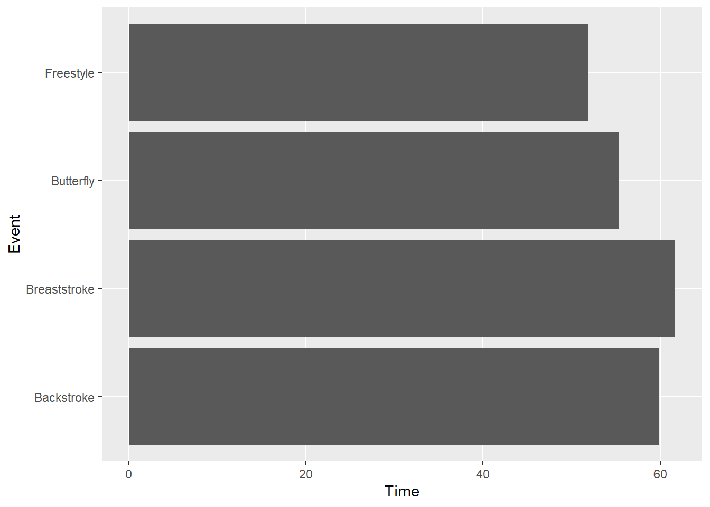
coord_fixed()
When ensuring the aspect ratio of the coordinate system is important, coord_fixed() will prove helpful.
The most important parameter of the function is ratio, which by default is set to ratio = 1. The ratio represents the aspect ratio, expressed as y / x. Thus, the number of units on the y-axis that are equivalent to one unit on the x-axis. Thus, ratio = 1 ensures that one unit on the x-axis equates to 1 unit on the y-axis.
You can easily modify this to a different value, for example, 1.5, 2 or 10 to make the y axis longer than the x axis by this ratio. If you wish to make the y axis shorted, use a value or fraction to be less than 1 (e.g1/5). In addition, xlim and ylim parameters can be set in this layer.
To illustrate, let’s set the two axis limits to begin and end at the same values using xlim() and ylim(). Both require a two element vector. In addition, the default ratio is ratio = 1.
SWIM |>
filter(Distance == 100) |>
ggplot(mapping = aes(x = Split50, y = Time)) +
geom_point() +
xlim(0, 60) +
ylim(0, 60) +
#coord_equal()
coord_fixed(ratio = 1)Warning: Removed 12 rows containing missing values or values outside the scale range
(`geom_point()`).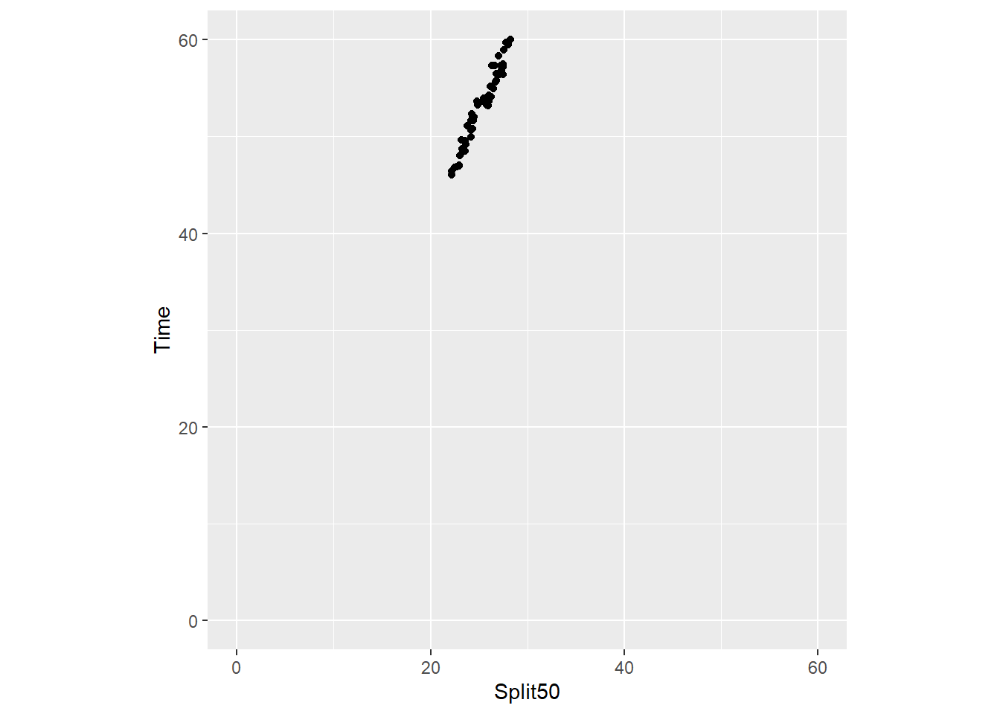
Setting ratio = 2:
SWIM |>
filter(Distance == 100) |>
ggplot(mapping = aes(x = Split50, y = Time)) +
geom_point() +
xlim(0, 60) +
ylim(0, 60) +
coord_fixed(ratio = 2)Warning: Removed 12 rows containing missing values or values outside the scale range
(`geom_point()`).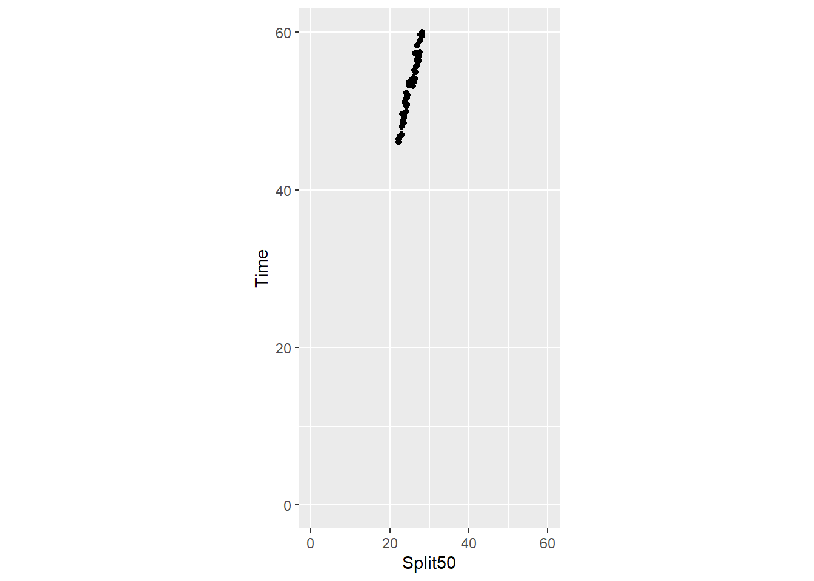
Nonlinear scales (e.g., logs)
In many cases, you will be trying to visualize data that are linear such that the numeric values of the variable map on to the same positions in space. The interval between numeric values is the same as the interval in physical space for the printed plot. In other cases, the interval between values may not be linear. For example, data that are converted to logarithms, square roots, cubes, etc. have one distance representing the actual numeric values (linear) and another distance corresponding to the values on the transformed scale (ordinal).
Wilke discusses several issues related to linear and nonlinear scales is his chapter covering axes. In particular, he discusses instances for presenting data as logarithms. When plotting log-transformed data, we can get confused about whether the data were transformed using the natural logarithm or the logarithm to base 10. And it’s not uncommon for labeling to be ambiguous, e.g. "log(x)", which doesn’t specify a base at all. I recommend that you always verify the base when working with log-transformed data. When plotting log-transformed data, always specify the base in the labeling of the axis.
Examples of Plots with Axis Problems
As we have seen with some plots out-of-the-box, the tick marks along either the x or y axis are not usually suitable for favorable perceptual experiences and extraction of data information. With histograms in particular, the user can be particularly challenged understanding the plot with height of the bar cannot be mapped to a value on the y-axis or when a position along the x-axis cannot be mapped well to the bin.
These problems are seen in these two simple examples.
plot1 <-
SWIM |>
filter(Time < 500) |>
ggplot(mapping = aes(Time)) +
geom_histogram(bins = 20) +
labs(title = "bins = 20",
tag = "A",
)
plot2 <-
SWIM |>
filter(Time < 500) |>
ggplot(mapping = aes(Time)) +
geom_histogram(bins = 60) +
labs(title = "bins = 60",
tag = "B",
)
plot(gridExtra::arrangeGrob(plot1, plot2, ncol = 1))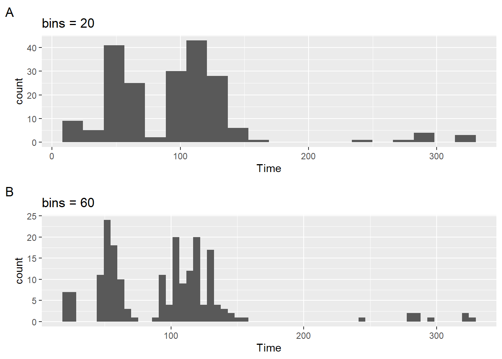
The previous modules are replete with plots containing poorly labelled axes. When plots have poor labels and tick marks, your ability to interpret the plot is compromised. We now focus At the time we introduced those plots, ways to address this problem were not introduced. This module addresses scale and axis adjustments.
Counts, Proportions, and Percentages
When plotting geom_histogram(), the default statistical transformation is to calculate frequency counts (Plot A).
Counts, however, represent frequencies for specific instances of a larger set of instances, so proportions allow the user to understand the relative distribution of counts across the bins. Plot B illustrates this usage. As long at the data frame passed into the geom_() is what appears on the plot, the user could also discover (if they did not know) that the bins sum to 1.0 for proportions and 100% for percentages.
But some users struggle with proportions and for them, percentages make more sense. Plot C makes an adjustment the position scaling of the y-axis. Because the y-axis is continuous, scale_y_continuous(labels = scales::percent), will take the values and replace them with a percent rescaling from the {scales} library.
plot1 <-
SWIM |>
filter(Time < 300) |>
ggplot(mapping = aes(Time)) +
geom_histogram() +
labs(title = "counts",
tag = "A",
y = "count"
)
plot2 <-
SWIM |>
filter(Time < 300) |>
ggplot(mapping = aes(Time)) +
geom_histogram(mapping = aes(y = stat(count / sum(count)))) +
# or geom_histogram(mapping = aes(y = after_stat(count)/sum(after_stat(count)))) +
labs(title = "proportions",
tag = "B",
y = "proportion"
)
plot3 <-
SWIM |>
filter(Time < 300) |>
ggplot(mapping = aes(Time)) +
geom_histogram(mapping = aes(y = stat(count / sum(count))),
binwidth = 1) +
# or geom_histogram(mapping = aes(y = after_stat(count)/sum(after_stat(count)))) +
labs(title = "proportions; binwidth = 1",
tag = "C",
y = "proportions"
)
plot4 <-
SWIM |>
filter(Time < 300) |>
ggplot(mapping = aes(Time)) +
geom_histogram(mapping = aes(y = stat(count / sum(count))),
binwidth = 5) +
# or geom_histogram(mapping = aes(y = after_stat(count)/sum(after_stat(count)))) +
scale_y_continuous(labels = scales::percent) +
labs(title = "proportions; with binwidth = 5",
tag = "D",
y = "proportions"
)
plot5 <-
SWIM |>
ggplot(mapping = aes(Time)) +
geom_histogram(mapping = aes(y = stat(count / sum(count))),
binwidth = 5) +
# or geom_histogram(mapping = aes(y = after_stat(count)/sum(after_stat(count)))) +
scale_y_continuous(labels = scales::percent) +
scale_x_continuous(limits = c(0, 300)) +
labs(title = "percentages with truncated x-axis; binwidth = 5",
tag = "E",
y = "percentages"
)
plot6 <-
SWIM |>
ggplot(mapping = aes(Time)) +
# geom_histogram(mapping = aes(y = after_stat(count)/sum(after_stat(count)))) +
geom_histogram(mapping = aes(y = stat(count / sum(count))),
bins = 15) +
scale_y_continuous(labels = scales::percent) +
scale_x_continuous(limits = c(0, 300)) +
labs(title = "percentages with truncated x-axis; bins = 15",
tag = "F",
y = "percentages"
)
suppressMessages(
suppressWarnings(
plot(gridExtra::arrangeGrob(plot1, plot2, plot3, plot4, plot5, plot6,
ncol = 2))
))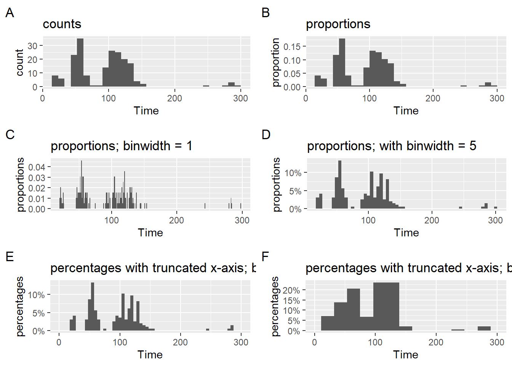
Notice that a labeling of the y-axis is also removed because the percent labeling makes this detail redundant. Only if your numbers omit a % would you need to include a major axis label. Do not burden your audience with details that do not facilitate plot consumption.
Position Scale Types
Although there are several types of scales, the two most common are scales for continuous data or discrete data. The focus will be on changing them.
scale_*_continuous()
scale_*_discrete()Position scales for continuous data: scale_*_continuous()
The continuous scale:
scale_y_continuous(
name = waiver(),
breaks = waiver(),
minor_breaks = waiver(),
n.breaks = NULL,
labels = waiver(),
limits = NULL,
expand = waiver(),
oob = censor,
na.value = NA_real_,
trans = "identity",
guide = waiver(),
position = "left",
sec.axis = waiver()
)Axis limits
In general, axis limits specify where the axis should start and where is should end (what’s rendered is a little more complicated though).
Notice there are four plots (e.gA, B, C, and D). Examine them for differences in their bars. Plot D bars look different from the others beyond the obvious y-axis difference. The data passed to the geom for that plot are not what appear on the plot. After the plot was rendered, the x-axis was adjusted by adjusting its limits.
A layer was added to the plot to set the limits scale_x_continuous(limits = c(0, 300)). Although there was no filtering of Time from the data frame, the limits were adjusted and the x-axis appears like Plots A, B, and C. Because the limits were adjusted after the statistical transformation took place in the geom, what you see is incorrect for the data. Whereas this approach presents no perceptual issue for most geoms, this approach will result in a misrepresentation of data for histogram plots displaying proportions or percentages. If you wish to present percentages, adjust the data frame a priori.
Tick Marks
You can specify where ticks appear along an axis by passing break specifications to breaks. Breaks also need corresponding labels. We will address both together because a label needs to exist for each of the breaks.
We can add breaks as a vector but remember that labels = scales::percent is just changing the rendering of the plot, not the actual values from the statistical transformation. You will need to pass a vector of proportions.
scale_y_continuous(breaks = c(.05, .10, .15, .20, .30),
labels = scales::percent
)SWIM |>
filter(Time < 300) |>
ggplot(mapping = aes(Time)) +
geom_histogram(mapping = aes(y = after_stat(count)/sum(after_stat(count)))) +
scale_y_continuous(breaks = c(.05, .10, .15, .20, .30),
labels = scales::percent
) `stat_bin()` using `bins = 30`. Pick better value with `binwidth`.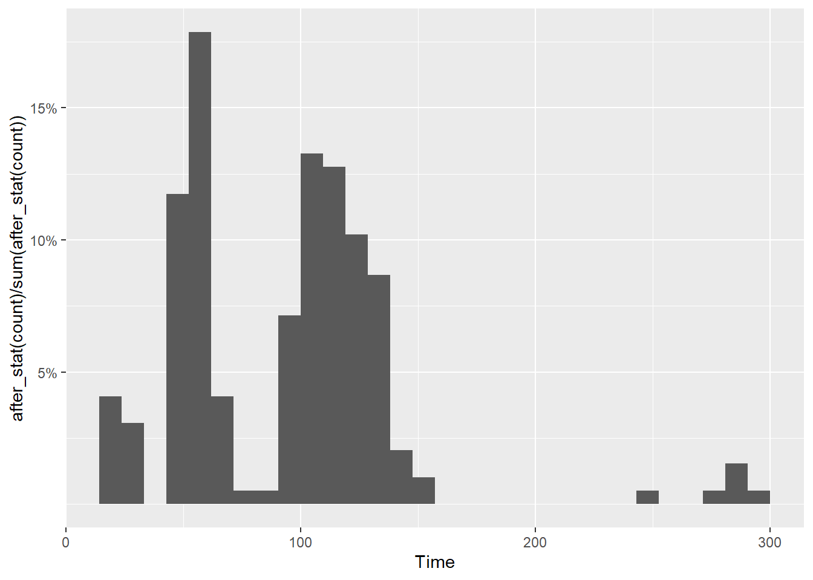
Wait! Not all ticks are there. This is because geom_histogram() made adjustments to the plot by default. You will need to make sure the limits accommodate the breaks. And yes, something else looks odd too.
SWIM |>
filter(Time < 300) |>
ggplot(mapping = aes(Time)) +
geom_histogram(mapping = aes(y = after_stat(count)/sum(after_stat(count)))) +
scale_y_continuous(breaks = c(.05, .10, .15, .20, .30),
labels = scales::percent,
limits = c(0, .30)
) +
labs(y = NULL)`stat_bin()` using `bins = 30`. Pick better value with `binwidth`.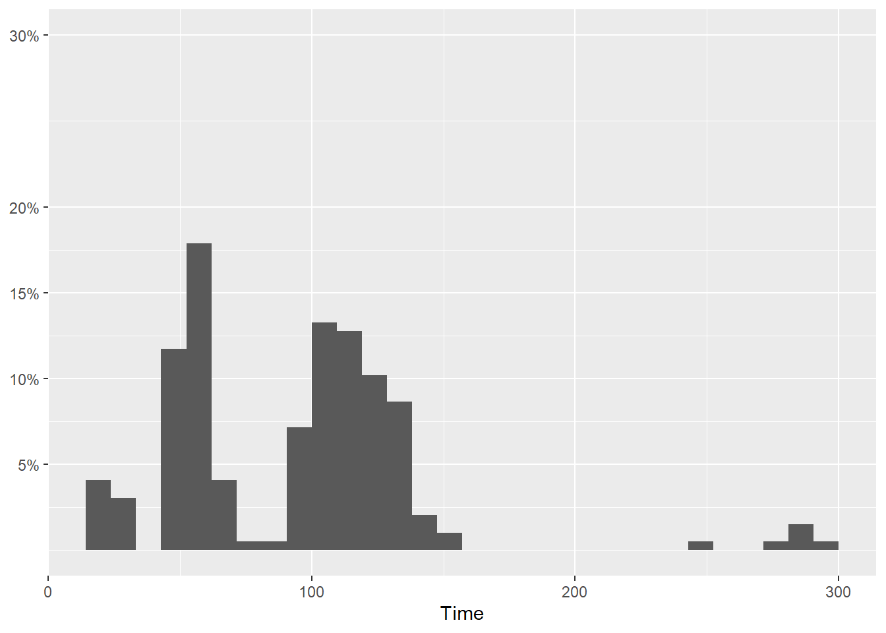
But notice also that only certain breaks were specified. Whether intentional or unintentional, there is a 10% jump from 20% to 30%. This looks odd but perhaps that was intentional.
SWIM |>
filter(Time < 300) |>
ggplot(mapping = aes(Time)) +
geom_histogram(mapping = aes(y = after_stat(count)/sum(after_stat(count)))) +
scale_y_continuous(breaks = c(.05, .10, .15, .20, .30),
labels = scales::percent,
limits = c(0, .30)
) +
labs(y = NULL)`stat_bin()` using `bins = 30`. Pick better value with `binwidth`.
How about geom_point()? You will need to make sure the limits accommodate the breaks. But what if we set the limits beyond the breaks?
SWIM |>
filter(Time < 300) |>
ggplot(mapping = aes(Time)) +
geom_point(mapping = aes(x = Split50, y = Time)) +
scale_x_continuous(breaks = c(20, 25, 30, 35, 40),
limits = c(20, 80)
) +
labs(y = NULL)Warning: Removed 15 rows containing missing values or values outside the scale range
(`geom_point()`).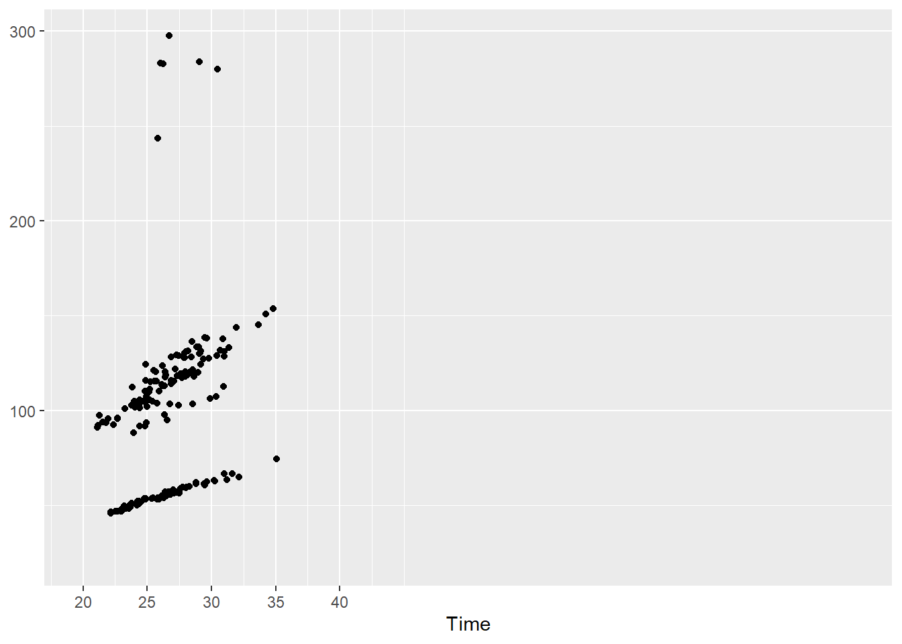
Breaks as a sequence using seq()
Using seq() we can specify the starting point (from) the ending point (to) and the step by which to create the sequence.
For example, seq(from = 0, to = .3, by = .05) will return 0, 0.05, 0.1, 0.15, 0.2, 0.25, 0.3. We could also make the breaks sequence from 0 to 1 but if we truncate the limits, then you just won’t see them anyway. Just don’t truncate the bottom.
SWIM |>
filter(Time < 300) |>
ggplot(mapping = aes(Time)) +
geom_histogram(mapping = aes(y = after_stat(count)/sum(after_stat(count)))) +
scale_y_continuous(breaks = seq(0, 1, by = .05),
labels = scales::percent,
limits = c(0, .20)
) +
labs(y = NULL)`stat_bin()` using `bins = 30`. Pick better value with `binwidth`.Break labels
You see that a labels adjustment has been added to the y-axis. This should suggest to you that you could pass your own break labels to either axis.
For example, we can just add a couple labels on the x-axis. Keep in mind that specifying labels will override other labeling by default.
scale_x_continuous(
breaks = c(100, 200),
label = c("100m", "Wow")
)And we can make the labelling more clear along the y-axis but making the sequence step smaller.
scale_y_continuous(breaks = seq(0, 1, by = .02),
labels = scales::percent,
limits = c(0, .2)
)Which gives us:
SWIM |>
filter(Time < 300) |>
ggplot(mapping = aes(Time)) +
geom_histogram(mapping = aes(y = after_stat(count)/sum(after_stat(count)))) +
scale_y_continuous(breaks = seq(0, 1, by = .02),
labels = scales::percent,
limits = c(0, .2)
) +
scale_x_continuous(breaks = c(100, 200),
label = c("100m", "Wow")
) +
labs(y = NULL)`stat_bin()` using `bins = 30`. Pick better value with `binwidth`.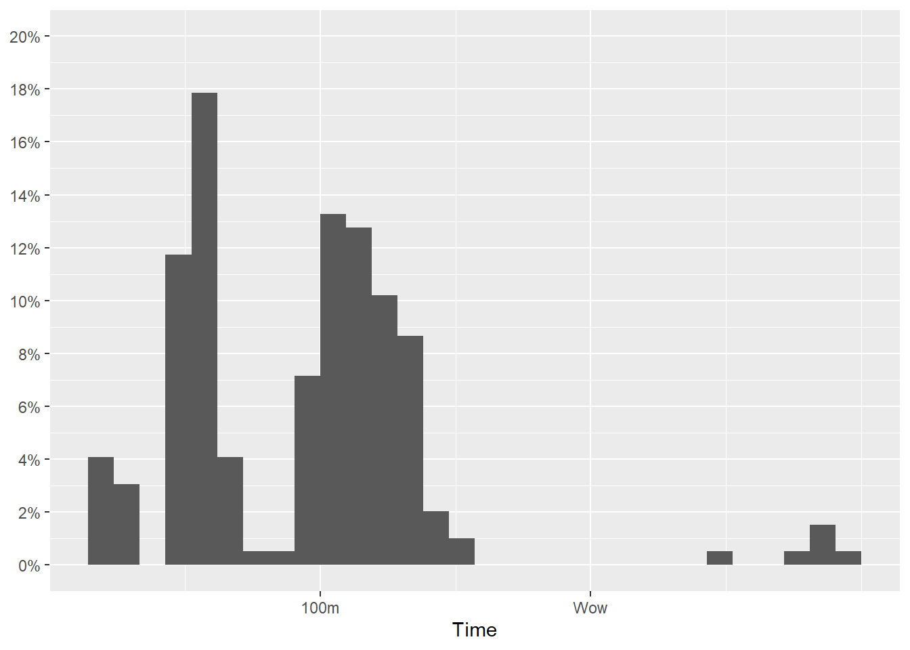
Position scales for discrete data: scale_*_discrete()
A geom_*() that plots data for a categorical variable, will have a discrete x-axis.
discrete_scale(
aesthetics,
scale_name,
palette,
name = waiver(),
breaks = waiver(),
labels = waiver(),
limits = NULL,
expand = waiver(),
na.translate = TRUE,
na.value = NA,
drop = TRUE,
guide = "legend",
position = "left",
super = ScaleDiscrete
)Limits and Breaks
When adjusting discrete limits, the limits correspond to the levels.
scale_x_discrete(limits = c("Freestyle", "Butterfly"))SWIM |>
filter(Time < 500) |>
ggplot(mapping = aes(x = Event, y = Time)) +
geom_point(position = position_jitter()) +
scale_x_discrete(limits = c("Freestyle", "Butterfly"))Warning: Removed 72 rows containing missing values or values outside the scale range
(`geom_point()`).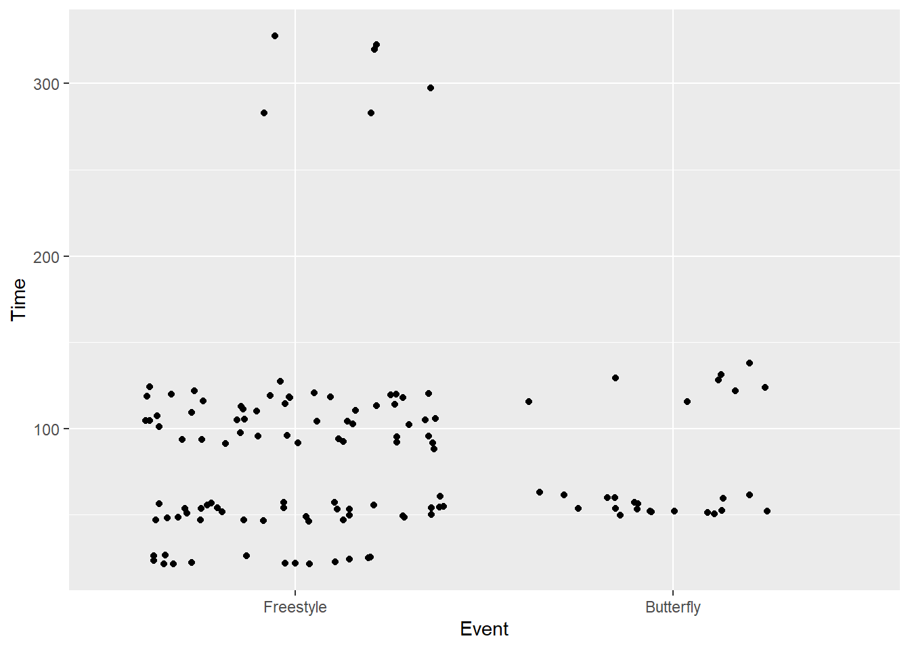
If you try to adjust a discrete axis using scale_*_continuous(), you will get the following error.
Error: Discrete value supplied to continuous scale
And breaks operate the same way so we can specify as vector here too.
breaks = c("Freestyle", "Butterfly")SWIM |>
filter(Time < 500) |>
ggplot(mapping = aes(x = Event, y = Time)) +
geom_point(position = position_jitter()) +
scale_x_discrete(breaks = c("Freestyle", "Butterfly"))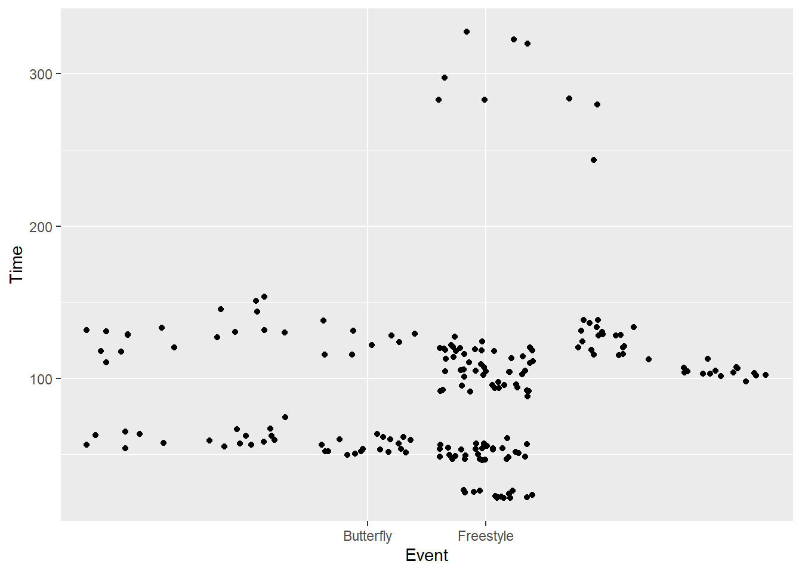
Then select a subset by level:
scale_x_discrete(limits = c("Freestyle", "Butterfly"))Alternatively, if you don’t want to reference a long function like scale_x_discrete(), there are shorthand functions for limits which you could just add as layers to the plot.
xlim(): a two-element vector with the start and end valuesylim(): a two-element vector with the start and end values
SWIM |>
filter(Time < 500) |>
ggplot(mapping = aes(x = Event, y = Time)) +
geom_point(position = position_jitter()) +
ylim(0, 600) +
xlim("Backstroke" , "Freestyle", "Butterfly")Warning: Removed 57 rows containing missing values or values outside the scale range
(`geom_point()`).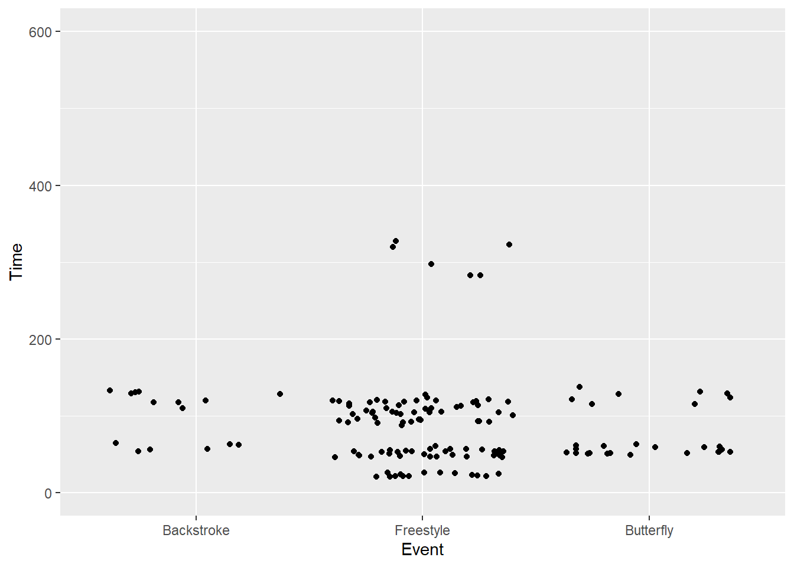
# scale_x_discrete(breaks = c("Freestyle", "Butterfly"))You can also expand plot limits to ensure you include a value. For more, see expand_limits().
Other Scale Functions
There are many other scale_*_() functions you could apply.
scale_x_sqrt(...)
scale_y_sqrt(...)Reverse a Continuous Scale
scale_x_reverse()
scale_y_reverse()SWIM |>
filter(Time < 500) |>
ggplot(mapping = aes(x = Event, y = Time)) +
geom_point(position = position_jitter()) +
scale_y_reverse()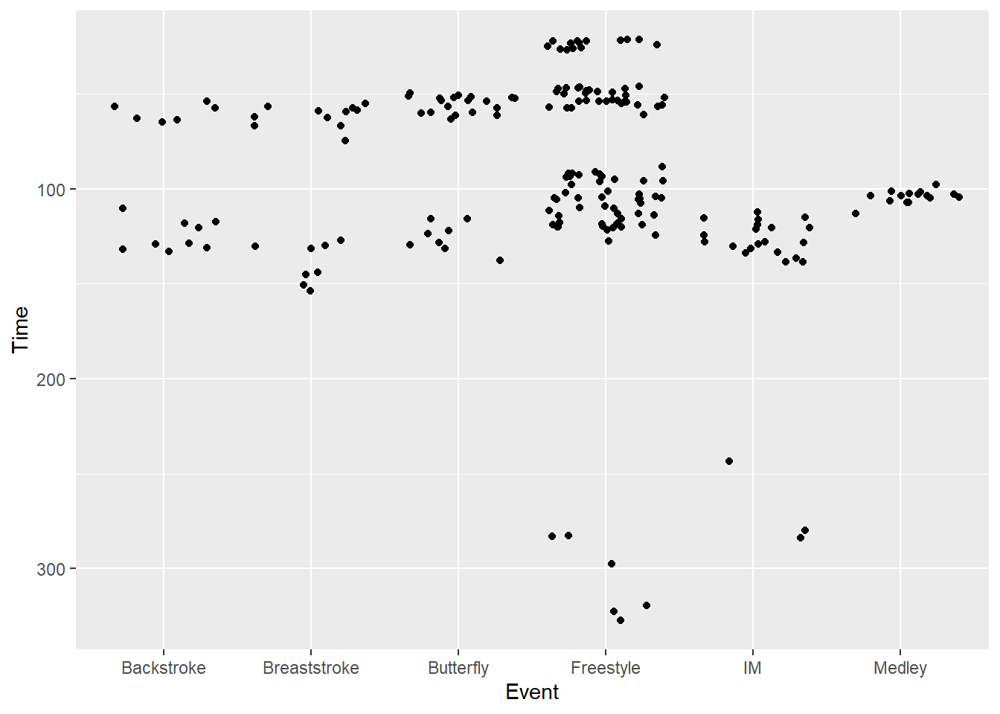
Convert to Log Scale
Whenever you perform operations, you should know what the returned values with be. The default logging function, log(), calculates the natural log. Use log10() or log(base = 10) to calculate base 10 logs.
scale_x_log10(...)
scale_y_log10(...)plot1 <- SWIM |>
filter(Time < 500) |>
ggplot(mapping = aes(x = Event, y = Time)) +
geom_point(position = position_jitter()) +
labs(title = "default",
tag = "A",
) +
coord_flip()
plot2 <- SWIM |>
filter(Time < 500) |>
ggplot(mapping = aes(x = Event, y = Time)) +
geom_point(position = position_jitter()) +
scale_y_log10() +
labs(title = "scale_y_log10()",
tag = "B",
y = "log10(Time)"
) +
coord_flip()
plot(gridExtra::arrangeGrob(plot1, plot2, ncol = 1))
Although the data have been transformed, one problem is that that the labels are not fixed to match the transformation.
We can set breaks and labels in scale_y_log10() as we have done earlier. This steps is failry complicated. Just as we fixed labels for percents with scales::percent, the {scales} library offers assistance here as well. We can use scales::trans_breaks() and pass some arguments.
breaks = scales::breaks_log(n = 6, base = 10)
labels = labels = scales::label_log(digits = 2)plot3 <- SWIM |>
filter(Time < 500) |>
ggplot(mapping = aes(x = Event, y = Time)) +
geom_point(position = position_jitter()) +
# create breaks and labels corresponding to the breaks
scale_y_log10(
breaks = scales::breaks_log(n = 6, base = 10),
) +
labs(title = "scale_y_log10() ",
subtitle = "with with scales::breaks_log() ",
tag = "C",
y = "log10(Time)"
) + coord_flip()
plot4 <- SWIM |>
filter(Time < 500) |>
ggplot(mapping = aes(x = Event, y = Time)) +
geom_point(position = position_jitter()) +
# create breaks and labels corresponding to the breaks
scale_y_log10(
breaks = scales::breaks_log(n = 6, base = 10),
labels = scales::label_log(digits = 2)
) +
labs(title = "scale_y_log10() ",
subtitle = "with breaks and exponentiated labels",
tag = "D",
y = "log10(Time)"
) +
coord_flip()
plot(gridExtra::arrangeGrob(plot3, plot4, ncol = 1))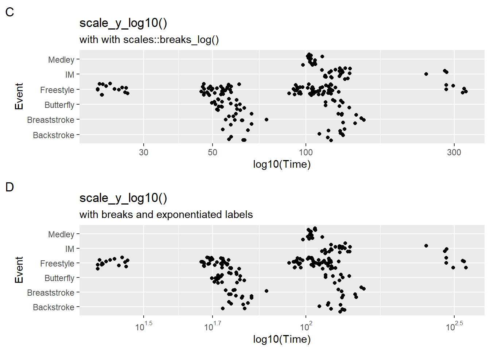
But they still might not look right. We can control our axis breaks by creating a sequence of values that we pass to scale_x_log10(breaks = ?). Starting at 10 seconds, we square to obtain 9 values.
10 * 2^seq(from = 0, to = 9, by = 1) [1] 10 20 40 80 160 320 640 1280 2560 5120We can create a starting point by creating a new data frame and defining an object to hold the fastest time and then plug that into seq().
SWIM_with_min <-
SWIM |>
filter(Time < 500) |>
filter(Event == "Freestyle") |>
#filter(Distance == 200) |>
mutate(Distance = factor(Distance))
minTime <- min(SWIM_with_min$Time)
maxTime <- max(SWIM_with_min$Time)
(plot5 <- SWIM_with_min |>
ggplot(mapping = aes(x = Event, y = Time, col = Distance)) +
geom_point(position = position_jitter()) +
# create breaks starting at 10 and then doubling
scale_y_log10(
breaks = minTime * 2^seq(from = 0, to = 9, by = 1),
#labels = scales::log_breaks(10)# label_log(digits = 2)
) +
labs(title = "scale_y_log10() with breaks sequence",
subtitle = paste0("adjusted to fastest time of: ", minTime, "s"),
tag = "E",
y = "log10(Time)",
x = ""
)
)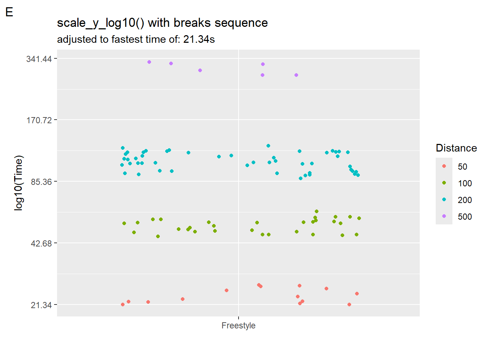
Position scales for date/time data
There area also scales for dealing with date and times. These can be used also in conjunction with breaks_pretty().
scale_*_date()
scale_*_time()Summary
We have seen that a lot of customization can be applied to our visualizations of data and have shown just a little bit of what can be done. Many more functions and parameters can be used to customize to greater extents.
Session Info
R version 4.4.1 (2024-06-14 ucrt)
Platform: x86_64-w64-mingw32/x64
Running under: Windows 11 x64 (build 22631)
Matrix products: default
locale:
[1] LC_COLLATE=English_United States.utf8
[2] LC_CTYPE=English_United States.utf8
[3] LC_MONETARY=English_United States.utf8
[4] LC_NUMERIC=C
[5] LC_TIME=English_United States.utf8
time zone: America/Los_Angeles
tzcode source: internal
attached base packages:
[1] stats graphics grDevices utils datasets methods base
other attached packages:
[1] htmltools_0.5.8.1 DT_0.33 vroom_1.6.5 lubridate_1.9.3
[5] forcats_1.0.0 stringr_1.5.1 dplyr_1.1.4 purrr_1.0.2
[9] readr_2.1.5 tidyr_1.3.1 tibble_3.2.1 ggplot2_3.5.1
[13] tidyverse_2.0.0
loaded via a namespace (and not attached):
[1] utf8_1.2.4 generics_0.1.3 stringi_1.8.4 hms_1.1.3
[5] digest_0.6.36 magrittr_2.0.3 evaluate_0.24.0 grid_4.4.1
[9] timechange_0.3.0 fastmap_1.2.0 R.oo_1.26.0 rprojroot_2.0.4
[13] jsonlite_1.8.8 R.utils_2.12.3 gridExtra_2.3 fansi_1.0.6
[17] scales_1.3.0 cli_3.6.3 rlang_1.1.4 crayon_1.5.3
[21] R.methodsS3_1.8.2 bit64_4.0.5 munsell_0.5.1 withr_3.0.1
[25] yaml_2.3.10 tools_4.4.1 tzdb_0.4.0 colorspace_2.1-0
[29] here_1.0.1 vctrs_0.6.5 R6_2.5.1 lifecycle_1.0.4
[33] htmlwidgets_1.6.4 bit_4.0.5 pkgconfig_2.0.3 pillar_1.9.0
[37] gtable_0.3.5 glue_1.7.0 xfun_0.45 tidyselect_1.2.1
[41] rstudioapi_0.16.0 knitr_1.47 farver_2.1.2 rmarkdown_2.27
[45] labeling_0.4.3 compiler_4.4.1